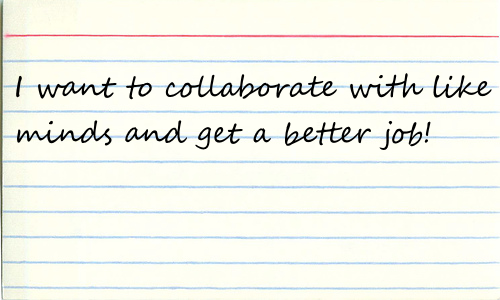

Charting Your PathTo Be The Best Business Analyst@ReadySetAgile |
|
John Riley · Principle Agile Coach and Trainer · Ready Set Agile
|

|
### Connections
---

## Goal for Today
---
Define a Business Analyst in 2026 and beyond!
### Sections of our discussion
---
- Introduction & Framing
- The Current Landscape
- Defining 2026 & Beyond
- Your Turn
#### Understanding the Current Landscape
---
| Format: | Shift and share |
| Objective: | Share your most effective techniques and tasks for each knowledge area? |
| Goal: | A shared understanding of the current BA role |
| Time: | 24m (5m per station, 4m for the "Harvest.") |
### Skills and Competencies
---
| Format: | World Café |
| Objective: | small group discussions that rotate, allowing participants to build on each other's ideas. |
| Goal: | Cross-pollinate ideas to define the 2026 BA persona. |
| Time: | 14m (5m rounds, 4m for the "Harvest.") |
### Conclusions
---
Final Thoughts
- Careers are evolving, but the need for Business Analysts is crutial
- Human skills bring purpose and connection with specific business
- A mentor, coach, or career partner is a big help!
- Seek mastery, learn with purpose, not just for a checkbox or a certificate
#### Professional Scrum Product Owner
---
The 2-day Professional Scrum Product Owner™ (PSPO) is a hands-on, activity-based course where students explore how Product Ownership is crucial to the success of a product.
Throughout the class, students learn a number of practices that they can use once they leave the classroom.
45% Discount code: RSABACON26
Access this presentation
John Riley
 https://www.linkedin.com/in/johril/
https://www.linkedin.com/in/johril/ john@ReadySetAgile technology@columbusoh.iiba.org
john@ReadySetAgile technology@columbusoh.iiba.org